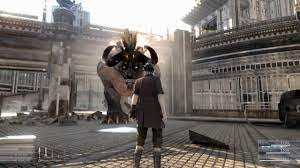

(164 miljoni vienību): Square Enix izdevusi Final Fantasy franšīzes pirmizrāde Japānā notika 1980. gados, bet pēc tam 1990. gadā ieradās Ziemeļamerikā PC. Franšīze joprojām turpinās ar 2022. gada izlaidumu “Stranger of Paradise: Final Fantasy Origin”, atzīmējot spēles 35. gadadienu.
Kāpēc tas ir svarīgi? Visvairāk pārdotās franšīzes mūsdienās lielākoties ir aktuālas, un katru gadu tiek izlaistas vai jauni izlaidumi ik pēc pāris gadiem.
